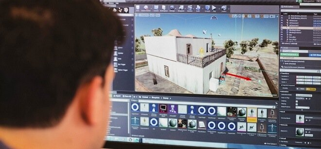
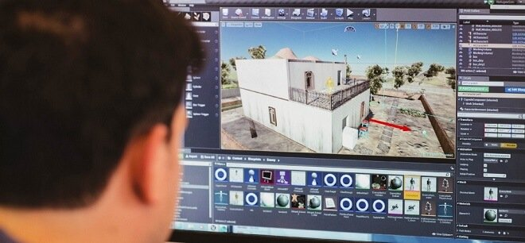

Video Games
 

Since a young age I have sepnt most of my childhood playing video Games as such they became a big part of my life, and i have always have wondered how are these games made how are there so much detail inside of a samll CD. As such I Began to wonder on the idea that maybe these video games are actually videos im not really playing them. So when i got older I Reserched about alot of different types of way games worked and why they worked and then it brought me to the program name. Computer science. So I spent most of my time getting high grades in the field of math and science. Now i am in computer science and im Slowly discovering the beauty of the program and how fun an interactive It can be. As such, when it comes to video games the more i play them The more i wish to know about what happens behind the screen. For The future of gaming is never the same.
AI

When I was young I was also In to robotics since they are the future of society. Yet the more I thought about it the more I wanted to be invovled. As such I looked at how robots are able to move on their own. As such I found out about how they are coded to follow certain set of instuctions. So for me to be able to become part of the Future I needed to get into Computer science. So now while im in the program these ideas motivate me to see if someday the things that I make will aid society.